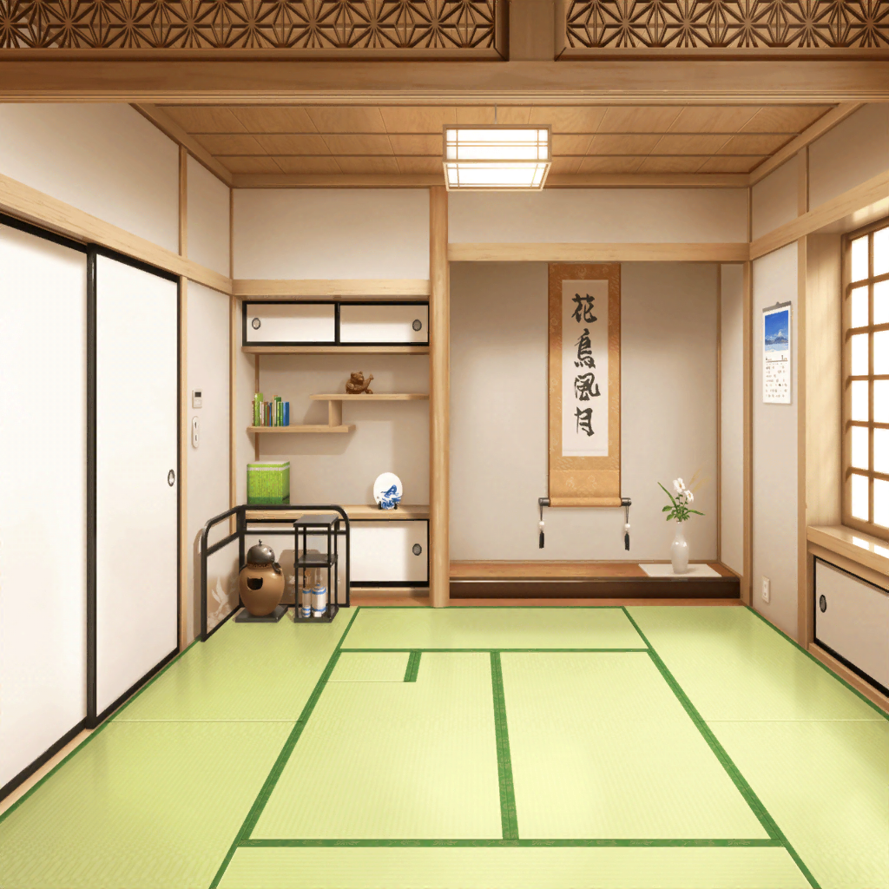

花咲川女子学園 茶室
茶道部顧問
――以上が、お茶会の流れになります。
本来、お茶会では亭主のみがお茶を点てますが、
せっかくですし、みんなでお茶を点ててみましょうか
燐子
え……み、見るだけじゃないんですね……
あの……わ、わたし……お茶って、初めてで……
うまく……出来ないと……思います。だから…………
花音
燐子ちゃん、そんなに緊張しないで。
まずは私がお手本を見せるから、それをそのまま真似してみて
燐子
……松原さんの、ですか……？
本当に、そのまま……同じようにすればいいんですか？
イヴ
はいっ。
今日は細かいお作法よりも、
お茶を楽しむということを知ってほしいんですっ
イヴ
お招きした人に、楽しいひとときをすごしてもらいたい。
そんなオモテナシの気持ちこそがお茶の心ですから。
……ですよね、カノンさん？
花音
うん。イヴちゃんの言う通りだよ。
今日は難しいことは考えずに、お茶を楽しんでいってほしいな
紗夜
でも……いえ。これ以上お断りするのは、
むしろ失礼になってしまいますよね。
松原さん、若宮さん、よろしくお願いします
花音
うんっ。立派なお手本になれるよう頑張るね
イヴ
私も、カノンさんと一緒にお茶を点てさせていただきますっ！
おふたりとも、よろしくお願いしますっ
燐子
そ……それなら、その……よ、よろしく……お願いします……
花音
こちらこそ、よろしくお願いします。
それじゃあ説明しながら、私とイヴちゃんでお茶を点ててみるね
花音
まずはお釜から、お湯をお茶碗に注いであっためるんだ。
お茶碗があったまったらお湯はこっちに捨てて、それから――
花音
――手順はこれで全部だよ。
みんなが持ってるイメージほど、複雑じゃないと思うんだけど……
どうかな？
紗夜
はい。これなら大丈夫そうです。
白金さんは……白金さん？
燐子
……え？ あっ、す、すみません……！
あの……つい……集中してしまって……
紗夜
いいえ、気にしないでください
紗夜
（2人の手元を、瞬きもせずに……すごい集中力だわ）
花音
じゃあ、次は２人に点茶をお願いするね。
わからないところは、聞きながらで大丈夫だから
落ち着いて、ゆっくりやってみて
燐子
は……はい……
紗夜
では、失礼させていただきます
燐子
あ、あの……わ、わたしも……よろしくお願いします
イヴ
はいっ！ おふたりのオテマエ、とても楽しみですっ
燐子
……まずはお茶碗をあたためて……ゆっくり、ゆっくり……
お茶碗があたたまったら……抹茶を……そっと、落として……
燐子
次に、お湯……ひしゃくですくって……
量は……たしか、４分の１くらいに……してた……はず……
紗夜
お茶碗をあたためて……
抹茶は、これくらいでいいのでしょうか？
実際にやってみると、少し迷ってしまいますね……
燐子
……
燐子
（松原さんは、５本の指で……茶せんを支えてた……
それから、手首で軽く……でも……しっかりと……）
紗夜
（……白金さん、とてもスムーズな動きだわ。
私ももっと、しっかりと点てなくては。加減は……
これくらいかしら……？）
紗夜・燐子
……
花音
２人とも、さすがだね。
１回見ただけで、大事なところをちゃんとおさえてる
イヴ
はいっ。おふたりとも、とても上手です
花音
（特に燐子ちゃん。力加減も速さも絶妙。
指先まで意識出来てる……本当によく見ててくれたんだなぁ）
花音
お疲れさま。
すっごく素敵なお点前だったよ
茶道部顧問
２人とも、落ち着いてお茶を点てることが出来ましたね。
特に白金さん。とても見事なお点前でした
燐子
……あ、ありがとうございます……！
紗夜
私も、とても素晴らしかったと思います。
実はところどころ、白金さんをお手本にさせていただきました
燐子
そ、そんな……氷川さんまで……
私は、松原さんの真似を……しただけで……
なんとか、できてよかったです……
花音
ふふっ。燐子ちゃん、そんなに謙遜しないで。
それだけ、よく出来てたってことだよ
茶道部顧問
ええ、本当に。
松原さんと若宮さんの力加減など、
微妙な違いにも気付いていたようですしね
イヴ
なんと！ そこまで見抜かれていましたか……！
花音
燐子ちゃん、もしかしてお茶を習ったことがあるの？
燐子
い……いえ……何もやっていません……
花音
じゃあ、本当に私とイヴちゃんのお点前を見ただけで？
すごい……！
イヴ
はいっ、すごいです！
リンコさん、ぜひとも茶道部に入部してくださいっ！
リンコさんなら、きっとすぐに亭主や主客を任されますよっ
イヴ
お茶を点てる亭主と、お客さんのリーダーとなる主客。
どちらも同じくらい重要な存在です。
大バッテキですよ！
燐子
り、リーダー……ですか……？
燐子
（どうしよう……でも……もしかしたら……
今が……変わるチャンス……なのかも……茶道部なら……
松原さんと若宮さんがいるし……）
燐子
あの、その……わ……わたし……！
茶道部員A
おつかれさまでーす。
……あれ？ あなたは……もしかして、新入部員！？
茶道部員B
えっ！？ わ、ほんとだ！ 良かったー！
うちの部、人少ないから歓迎しますよっ！
花音
み、みんな……あのね、燐子ちゃんはまだ体験入部で……
茶道部員C
そうなんですか〜。体験入部なんて久しぶりですね！
あの、あたしたち、ほんと大歓迎なんで！
良かったらすぐにでも入部してくださいっ！
茶道部員A
なんならこれから、歓迎会代わりにお茶会なんてどうですか？
あたし、今日美味しいお菓子持ってきたんですよ！
茶道部員B
それいいっ！ やろうやろう！
燐子
えっ……あ……あの……
燐子
やっぱり……その……ご、ごめんなさい……